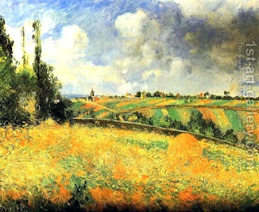

Arachin 29 - Dedication ("cherem") - To Whom?
One can pronounce dedication ("cherem") of his property, after which it becomes forbidden to him and goes either to the Temple or to the Kohanim. Among the Kohanim, it goes to the family that serves in the Temple this week.
If one pronounced a dedication but did not specify who it should go to, then it goes to the upkeep of the Temple - so says Rabbi Yehoshua ben Beteira, since the Torah said, " Any dedication ("cherem") is most holy to God ." However, the Sages says that any unspecified dedication goes to the Kohanim, since the Torah said, " Any dedicated field shall be to the Kohen ." If so, how do the Sages explain the phrase used by Rabbi Yehoshua? - It teaches that one can dedicate ("cherem") even offerings that are already holy , which will result in additional obligations on his part.
If one sells an ancestral field, he is not permitted to redeem it less than two years after the sale, as the Torah said, " According to the number of crops is the price ", and the minimal number of plural "crops" is two. However, a year of drought or a shemittah year don't go into the count.
Art: Camille Pissarro - Fields